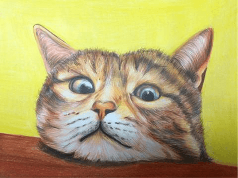
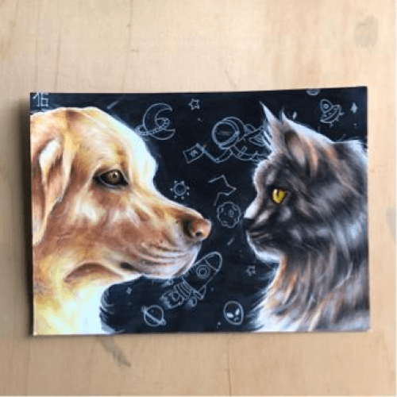
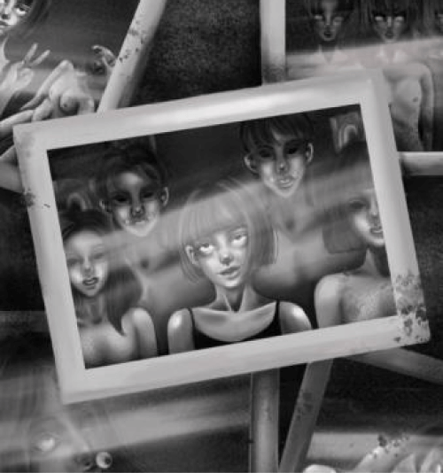
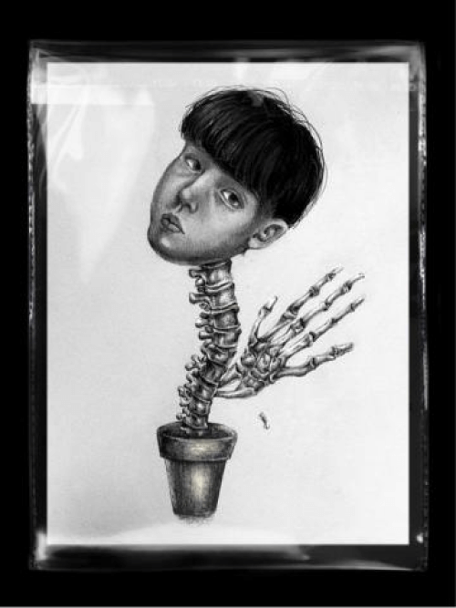
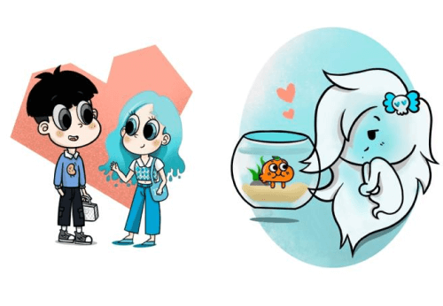
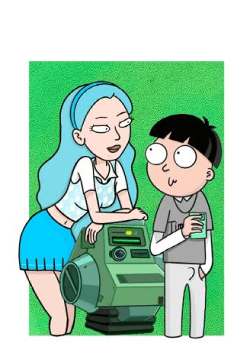
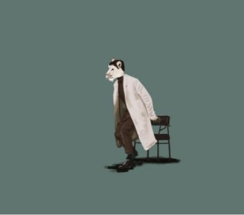
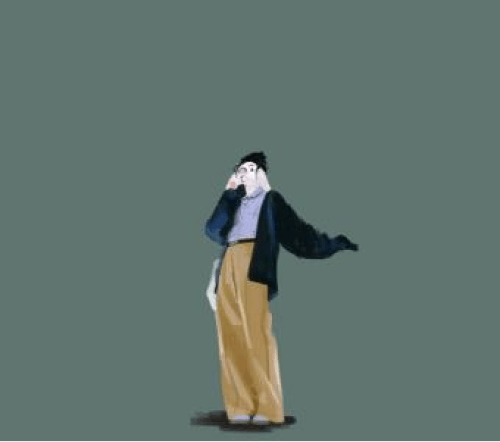

台灣插畫家/圖文作家
台灣插畫家/圖文作家
AVERY
風格多樣且會操作多項軟體，像是Adobe軟體的Illustrator、Photoshop、Dimensions、Animate，以及電腦繪圖軟體procreate、Medibang Paint Pro，手繪媒材像是素描、麥克筆、色鉛筆、水墨、水彩、壓克力及代針筆，善於繪製暗黑風、黑白插畫，平時多以反諷、隱喻的思想創作，但也有許多商業平面設計的服務，像是Logo設計、名片設計、包裝設計...等各式圖稿設計與繪製。
寫實風格的手繪插畫
寫實畫風的插畫屬於半寫實，會先繪製鉛筆草稿追求人物、動物的五官比例、角度與現實相同，草稿完成後則會在顏色、光影細節稍加改動以讓畫面更完美。
 
黑暗奇幻風格的人像插畫
暗黑、奇幻風格是將生活中觀察到的現象以反諷、隱喻的方式呈現在作品中，在寫實的人物比例上將人體扭曲，或是部分增添詭譎的繪圖元素。
 
美式卡通畫風人物插畫
他還有許多可愛、顏色飽滿的美式卡通畫風插畫，主要是以知名的美國卡通公司或卡通作品的風格繪圖，像是福斯國際影視公司旗下的The Simpsons辛普森家庭、華納旗下的卡通Rick and Morty瑞克和莫蒂、卡通頻道工作室的The Amazing World of Gumball阿甘妙世界...等知名卡通作品。
 
Ethan伊森
台灣插畫家伊森是位沈穩內斂的視覺藝術工作者，曾為互動型的劇場表演 - 來生簽證 執行平面設計，斑駁、偏暗的色調，舊文件上印泥的紅色調，以及復古的銅錢、茶杯插圖，都讓觀眾在網頁購票的階段就充分沈浸在來生轉世的情境當中。
動物時尚插畫設計
時尚插畫設計主要著重在服飾的樣貌展現，因此多會將人體的比例拉長以完美展演服裝的美。
 
微疼
以自己生活上的不幸作為題材，創作出詼諧、獨特的漫畫作品，在網路上擁有超高人氣，臉書粉絲團吸引超過76萬人關注，深受大批網友們喜愛。
著作
《大學微微疼》ISBN：9789571362427
《大學微微疼2》ISBN 9789571365046
《怪奇微微疼》ISBN 9789571371054
《夢想微微疼》ISBN 9789573288237
訪談
VIDEO
資料來源: